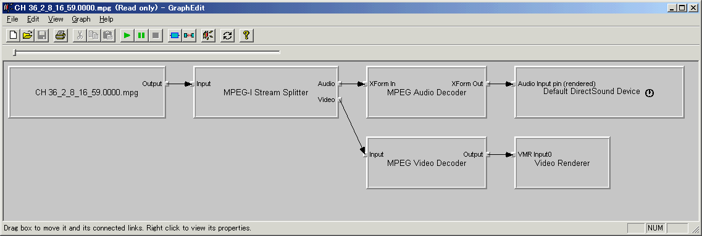

DirectShow関係
１．動画の再生
具体的なコードの前にDirectShowについて知っておいた方がいいことを先に説明します。
DirectShowでは「フィルタ」と呼ばれるモジュールをつなぎ合わせて「フィルタグラフ」と呼ぶものを作ります。
フィルタ同士の接続は「ピン」と呼ばれるインターフェースで行われます。
下図はMPEG1ファイルを再生するグラフになります。

四角のがフィルタで、フィルタの左右にあるでっぱりがピンになります。
フィルタ同士の接続は方向性があり、出力ピンと入力ピンが接続されます。
（上図の矢印がフィルタの接続になります。）
動画のデータは「ストリーム」と呼ばれ、このストリームがグラフの上流から下流に向かって流れていくと想像してください。
フィルタは大きく分けて下記のような種類があります。
| ソースフィルタ | HDDなどから動画や音声のファイルを読み込んで、下流のフィルタにデータを流します。 通常出力の口だけがあり、グラフの上流に位置します。 |
| 変換フィルタ | 入力と出力があり、入力したストリームに何らかの処理を施し出力します。 ソースフィルタが出力したストリームを分解し、映像と音声のストリームに分ける「スプリッタフィルタ」、 圧縮されているストリームを展開する「デコーダ（デコンプレッサ）フィルタ」、 逆に非圧縮なストリームを圧縮する「エンコーダ（コンプレッサ）フィルタ」、 等々、非常に多くの種類があります。 |
| レンダラフィルタ | 通常入力だけがあり、画面にストリームを描画（レンダリング）したり スピーカから音を出したりします。 |
上の図はDirectX SDKに付属するツール「GRAPHEDIT(graphedt.exe)」で作成したものです。
このGraphEditは非常に便利なツールで、
簡易プレーヤーにもなりますし、MpegからWMVへ等の変換ツールにもなります。テレビのキャプチャなんてのも可能です。
ぜひ使いこなせるようになりましょう。（日本語に対応していないのが難点）
では、実際にVBでDirectShowを使う方法を説明していきます。
基本的に上で説明したフィルタグラフを作成し、それを実行させれば動画の再生ができるわけです。
まず前準備として
VBでDirectShowを使うには下記のDLLを参照設定する必要があります。
ActiveMovie control type library
DirectX SDKをインストールすれば参照設定のダイアログに表示されているはずです。
動画を再生する実際のコードは下記のようになります。
フォームはデフォルトのままでかまいません（コードからサイズ等を変更しています）。
下記のコードをフォームモジュールにコピペして実行すれば、動画ファイルが（いきなり）再生されます。
Option Explicit |
順に説明します。
'再生する動画ファイル |
モジュールセクションでは定数の定義と「フィルタグラフマネージャ」オブジェクトの定義を行っています。
定数VIDEOFILE$は再生するファイル名を指定しています。試すときは適当に変えてください。
（butterfly.mpgはDirectX SDKにあるサンプルファイルです）
フィルタグラフマネージャはグラフ作成をサポートしてくれるオブジェクトです。（っていうかVBではこれでしか作れない）
FilgraphManagerオブジェクトは動画再生中は存在し続ける必要があるのでモジュールセクションで定義します。
Private Sub Form_Load() |
FilgraphManagerオブジェクトをNew演算子により作成します。
'再生用のグラフを作成 |
再生するファイルを指定してグラフを作成します。
RendeFileメソッドはファイルからその形式を自動的に判断し、再生するのに必要なグラフを作成してくれます。
ただ再生させるだけならば非常に楽です。
'ビデオサイズ(縦横)を取得 |
フィルタグラフマネージャからIBasicVideoインターフェースを取得し、
動画ファイルの縦横サイズを取得しています。
これは下の部分で動画サイズに合わせてウィンドウサイズを変更するために取得しています。
ここでちょっと説明しておくことがあります。
変数mGrpはFilgraphManager型の変数なのですが、
これをIBasicVideo型の変数bvにSet文で参照を代入しています。
これはエラーになりません。
なぜならばFilgraphManagerオブジェクトはIBasicVideoインターフェースを持っているからです。
Impliment文などでクラスを使ったことがある方なら理解できると思いますが、
知らない方には奇妙なコードに見えるかもしれません。
同様にFilgraphManagerオブジェクトは下記のインターフェースを持ちます。
| IMediaControl | グラフの動作に関するインターフェースです。 実行させたり（再生開始）、止めたりするメソッドがあります。 このインターフェースはデフォルトインターフェースなので、 メソッドはFilgraphManagerオブジェクトから直にメソッドを呼び出せます。 |
| IMediaEvent | イベント関係のインターフェースです。 動作が完了するまで待つWaitForCompletionメソッドなどがあります。 |
| IMediaPosition | 主にシーク関係のインターフェースです。 再生位置を変更したり、全体の長さなどを取得するメソッドがあります。 |
| IBasicAudio | 音声関係のインターフェースです。 |
| IBasicVideo | 映像関係のインターフェースです。 これから動画のサイズなどを取得できます。 |
| IVideoWindow | ビデオレンダラ関係のインターフェースです。 デフォルトでは別ウィンドウで動画が再生されますが、 このインターフェースのOwnerプロパティで自前のフォーム内で再生が可能です。 |
'ビデオサイズに合わせてウィンドウを調整 |
ここの前半は、フォームの縁のサイズを計算し、
動画のサイズに合わせてフォームのサイズを変更しています。
後半はフォーム内で動画を再生させるための処理です。
WindowStyleプロパティで子ウィンドウの形式にし、
SetWIndowPositionメソッドで位置とサイズを指定、
Ownerプロパティで親ウィンドウをフォームにしています。
これでフォーム内で動画が再生されます。
SetWindowPositionの引数の意味はMSDNを参照してください。
（指定しない場合どうなるかを見てみればわかります。これはこれで面白いけど）
'再生 |
最後にRunメソッドでグラフを開始させます。
これで動画再生が始まります。
このサンプルではフォーム内で再生させるためのコードの方が多いです。
それを抜いてDIrectShowで動画を再生させる方法をまとめるとこんな感じです。
１．FilgraphManagerオブジェクトを作成
２．RenderFileメソッドでグラフを作成
３．Runメソッドで再生開始
実は定義を入れても４行ですんだりします（笑
DirectShowではAVIやMPEG、WMV形式の他に、JPEGやGIFファイル等の静止画にも対応しています。
GIFの場合アニメーションGIFならばちゃんと動きます。
アニメーションGIFをVBで再生させるときはWebBrowserコントロールを使うのが常ですが、
DirectShowを使っても可能なんですよ。
追加情報
上記コードでは最後まで再生されると、最後の画像が表示されたままになります。
再生が終わったことを知りたい場合や、連続再生（ループ再生）する場合は
主に２つ方法があります。（他の方法もありますが）
（１）現在の再生位置を調べて終端に達したか判断する（ポーリング）
（２）再生が完了したときに通知をもらう（K.J.K様よりゲストブックに投稿頂きました）
再生位置の表示も行うような場合は（１）の方が楽かもしれません。
単純に再生が終了したことを知りたい場合は（２）の方がスマートだと思います。
---------------------------------------------
（１）現在の再生位置を調べて終端に達したか判断する（ポーリング）
具体的なコードは下記になります。
上で提示しているサンプルコードに下記を追加し、
フォームにタイマーコントロール（Name=Timer1、Interval=100程度）を追加してください。
'タイマー処理 |
タイマーイベントにて現在の再生位置と終了位置（全体の長さ）を取得し、
終了位置に達していた場合は現在の再生位置を先頭にすることでループ再生を実現しています。
（IMediaPositionインターフェースのCurrentPositionプロパティが現在の再生位置で
取得も設定もできます。）
---------------------------------------------
（２）再生が完了したときに通知をもらう
IMediaEventExインターフェースのSetNotifyWindowを使用すると
再生が終了したときに指定したウィンドウに対してメッセージを送ってもらえます。
この通知メッセージを受け取った時にグラフのイベントを取得することにより
再生の終了タイミングを得ることができます。
具体的なコードは下記になります。
上で提示しているサンプルコードを下記の様に変更・追加し、
フォーム上に非表示にしたPictureBox（Name=Pic_Dummy、Visible=False）を配置して下さい。
|
若干補足します。
|
Runメソッドで再生する前に、
上記のようにSetNotifyWindowで通知先のウィンドウハンドルと通知するメッセージを指定しておきます。
これによりグラフでなんらかのイベント（再生が終わったとか、状態が変化したとか、等など）が
発生した場合、指定されたウィンドウに対して指定したメッセージが送られるようになります。
サンプルではウィンドウハンドルにはPic_DummyのhWndプロパティを指定し
通知メッセージとしてWM_MOUSEMOVEを指定しています。
このようにすることでイベントが発生した場合Pic_dummyのMouseMoveイベントが発生します。
（この辺はWindowsの仕組みをある程度知ってないと理解できないかもしれません。）
|
ピクチャーボックスPic_DummyのMouseMoveイベントプロシジャでは
IMediaEventインタフェースを使いイベントコードを取得し、
再生終了のイベントコード(EC_COMPLETE = 1)を得た時に
（１）と同様に再生位置を先頭に戻しています。
ここで注意して欲しい点が２点あります。
一つは通知メッセージが送られる（＝MouseMoveイベントが発生する）のは
再生終了時のみではないということです。
メッセージが送られるのはなんらかのグラフイベントが発生したからで、
再生が終わってない状態でもMouseMoveイベントが発生します。
もう一つはグラフのイベント一件毎にMouseMoveイベントが発生する訳ではないということです。
MouseMoveイベントが発生した要因のグラフイベントのコードは
IMediaEventインターフェースのGetEventメソッドで取得しますが、
サンプルコードのように失敗（＝エラー）となるまで
Do～Loopにて繰り返し取得する必要があります。
グラフのイベントコード(EC_COMPLETEなど)の意味については
リファレンスマニュアルに記載がありますのでそちらを参照してください。
また実際の値についてはC/C++用のヘッダファイルをみることで確認できます。
（私はWindowsSDKなどにあるevcode.hなどを見て確認しています）